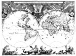

Nova et accuratissima totius terrarum orbis tabula auctore Ioanne Blaeu. [Schaal circa 1:75.000.000, azimutale stereografische projectie.] Kopergravure, gekleurd, 410 x 545 mm. In: J. Blaeu, Grooten atlas oft Wereltbeschrijving. Het eerste deel. t’Amsterdam, bij Joan Blaeu, 1664. -- (COLLBN Atlas 3-1)
Amsterdam, dat tegen het einde van de zestiende eeuw de rol van Antwerpen als metropool van de wereldhandel overnam, werd spoedig daarna het commerciële en aanvankelijk ook wetenschappelijke centrum van de cartografie. Het was daar dat de uit Vlaanderen afkomstige Jodocus Hondius (1562-1612) de Mercator-atlas in 1605 opnieuw uitgaf, geheel herzien en aangevuld. Hij vormde het begin van een grote reeks Amsterdamse atlassen, die zich tot ver in de achttiende eeuw zou voortzetten, met als hoogtepunt de Atlas maior van Joan Blaeu, een terrein waarop zijn concurrenten tot dan toe het monopolie feitelijk hadden weten te handhaven. De nieuwe atlas, die, als we op de titel mogen afgaan, aanvankelijk nog de bescheiden bedoeling had een aanvulling te willen zijn op de atlassen van Ortelius en Mercator (Appendix Theatri A. Ortelii et Atlantis G. Mercatoris) groeide onder de energieke leiding van Willem Jansz Blaeu en zijn zoon Joan (1596-1673) in vijfentwintig jaar uit tot hun Tooneel des aerdrijcks oft Nieuwe atlas, in zes banden met in totaal ongeveer vierhonderd kaarten. Dat was echter nog maar een voorlopig eindpunt, want Joan Blaeu had een uitgave met een nog groter opzet voor ogen, waarin zowel geografie als hydrografie en astronomie zou worden opgenomen. Alleen het geografisch gedeelte daarvan is gerealiseerd: de Atlas maior (1662) of Grooten Atlas (1664) in twaalf, respectievelijk negen delen. De verdiensten van dit monumentale werk betreffen de grootse conceptie die eraan ten grondslag ligt, de stijlvolle en rijke verzorging van de uitgave en de ondernemingsgeest en het koopmanschap van de maker, maar niet de kaarten zelf, die grotendeels ontleend zijn aan andere of overgenomen uit zijn eigen vroegere atlassen.
Een van de kaarten die Joan Blaeu speciaal voor de Atlas maior opnieuw liet graveren, is deze wereldkaart, waarmee de atlas opent. De kaartinhoud is uiterst sober gehouden. De rijke omlijsting met allegorische voorstellingen van die planeten in hun banen om de zon bovenaan, en onderaan de vier jaargetijden zorgt daarentegen voor een decoratief geheel.
Van 1630 tot 1662 hadden de Blaeus in hun atlassen een sterk verouderde rechthoekige wereldkaart in Mercator-projectie opgenomen, waarvan de gravure nog uit 1606 dateerde. Het is opmerkelijk dat ze pas in 1662 voor het eerst kozen voor een afbeelding van de wereld in halfronden, terwijl ze toch als makers van grote wandkaarten van de wereld in halfronden al vanaf 1605 een grote reputatie hadden opgebouwd.
Literatuur
- C. Koeman, Atlantes neerlandici. Bibliography of terrestrial, maritime and celestial atlases and pilot books, published in The Netherlands. Amsterdam [etc.] 1967-1986. 6 dln, dl. 1, p. 67-294, Bl 1 -- Bl 56 A. C.
- C. Koeman, Joan Blaeu and his 'Grand atlas'. Amsterdam 1970.
- J. Keuning, Willem Jansz. Blaeu. A biography and history of his work as a cartographer and publisher. Rev. and ed. by M. Donkersloot-De Vrij. Amsterdam 1973.
- H. de la Fontaine Verwey, ‘De glorie van de Blaeu-atlas en de "meester afsetter"’, in: In en om de ‘Vergulde Sonnewyser’. Amsterdam 1979 ( = Uit de wereld van het boek III), p. 195-226.
- F. Wawrik, Berühmte Atlanten. Kartographische Kunst aus fünf Jahrhunderten. Dortmund 1982, p. 94-99.
- R. Shirley, The mapping of the world. Early printed world maps, 1472-1700. London 1983, nr. 253, 300, 371, 428.
| vorige pagina | top pagina |